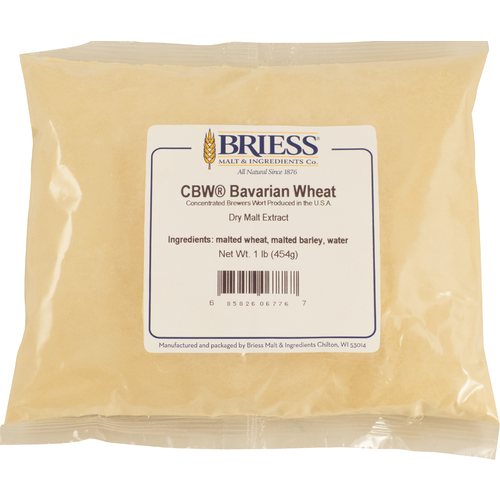

Brewing History
Home
Equipment
Supplies
2022 Brews
American Pale Ale II
Eskimo Amber Ale
Columbus IPA
Hop Blonde Ale
German Hefeweizen
Ugly Fish IPA
Ingredients Catalog
Steeping Grains
Malt Extract
Liquid Malt Extract (LME)
Ultralight Malt Extract (LME)
Dry Malt Extract (DME)
CBW Bavarian Wheat (DME)
CBW Golden Light (DME)
Hops
Yeast
Brewing History
»
Ingredients Catalog »
Malt Extract
Malt Extract
Liquid Malt Extract (LME)
Ultralight Malt Extract (LME)
Product page
Dry Malt Extract (DME)
CBW Bavarian Wheat (DME)

Product page
CBW Golden Light (DME)
Product page
« Previous
Next »